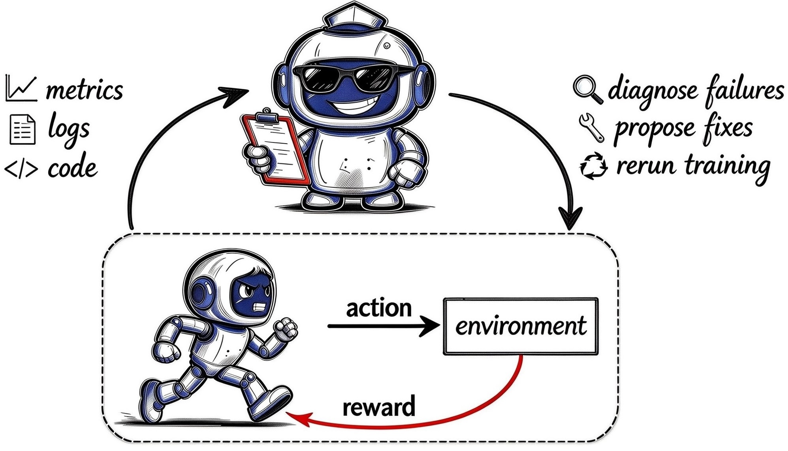

New benchmark
Real RL training failures.
Can agents find them?
Can agents find them?
Every task is a real RL run that went wrong. The agent reads the workspace, logs, and metrics, finds the root cause, and where a fix exists, repairs it and reruns.

6
Domains
7
Evaluated systems
0.92
Top issue score
thinking-space.github.io/AutoRLBench · accepting contributions